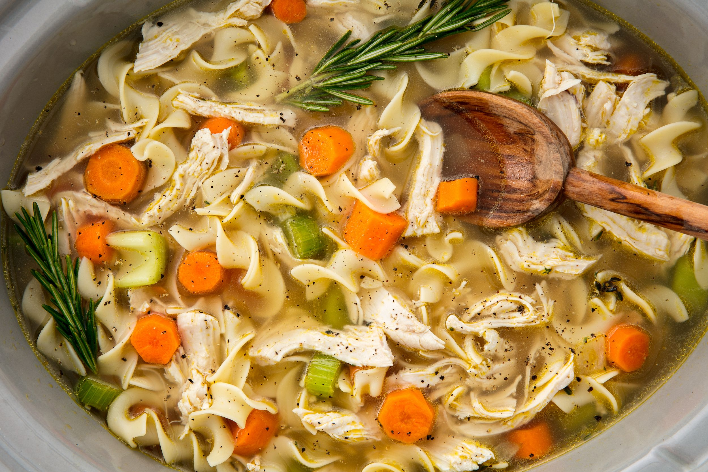

Chicken Noodle Soup

Description
MMMMM! Doesn't this soup look tasty?
You too can make this satisfying chicken dish
Perfect on a cold day to warm body and spirit
Ingredients
- 1 1/2 lb. boneless skinless chicken breasts
- 1 large onion, chopped
- 3 carrots, peeled and sliced into coins
- 2 stalks celery, sliced
- 4 tsp. sprigs fresh thyme
- 4 tsp. sprigs fresh rosemary
- 3 cloves garlic, minced
- 1 bay leaf
- Kosher salt
- Freshly ground black pepper
- 10 c. low-sodium chicken broth
- 8 oz. egg noodles
- In a slow cooker, combine chicken, onion, carrots, celery, thyme, rosemary, garlic, and bay leaf and season generously with salt and pepper. Pour in broth.
- Cover and cook on low, 6 to 8 hours. Remove chicken from slow cooker and shred with two forks. Discard herbs and bay leaf. Return chicken to slow cooker and add egg noodles.
- Cook on low, covered, until al dente, 20 to 30 minutes.